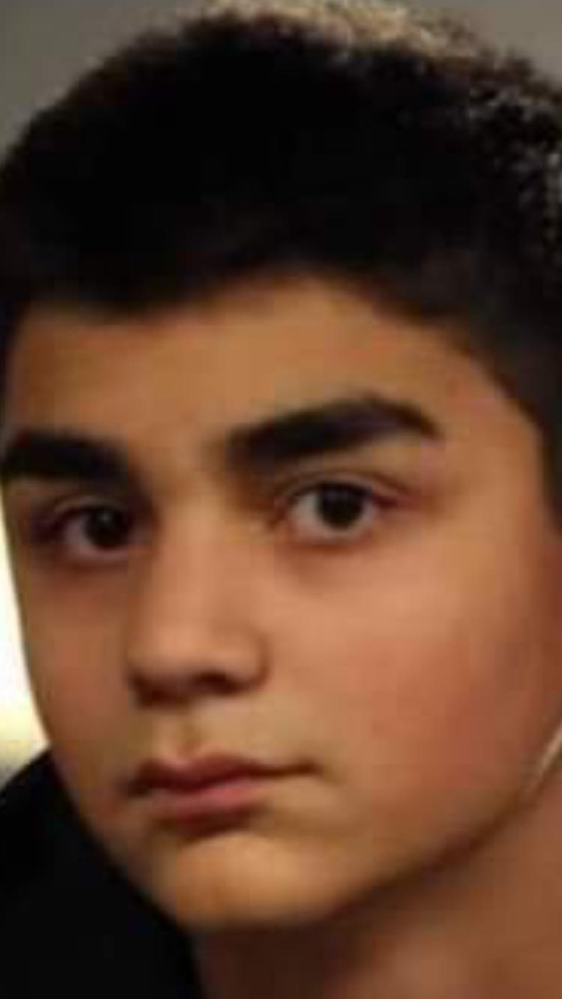
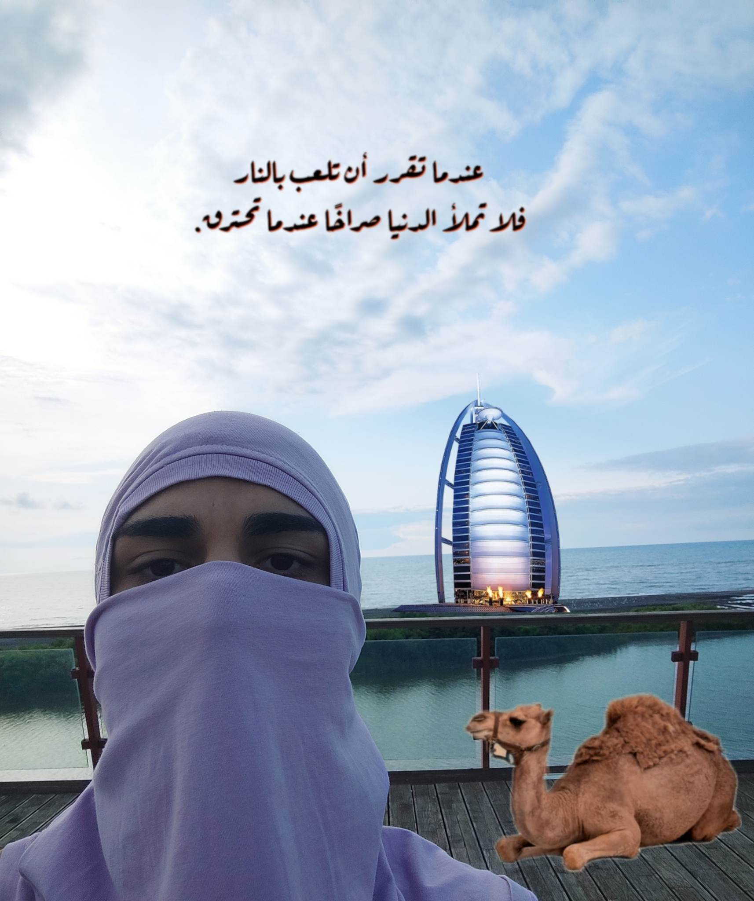

Boslevi


Tsotne (Tsiyvi) -
დაბადებული 2005 წლის 9 ივლისს. ცოტნე(ციყვი) არის ერთ-ერთი ყველაზე სასტიკი დაჯგუფების, ალ-კაიდას საკმაოდ
გავლენიანი წევრი. ჯერ-ჯერობით მას აქვს ჯაშუშის სტატუსი აღმოსავლეთ ევროპაში , კერძოდ საქართველოში.
მიღწევები : მონაწილეობდა 2001 წლის 11 სექტმებრის ტერაქტში ,შარმ-ელ-შეიხში (23.07.2005) და კენიაში მთავარ პილოტად, როგორ გადარჩა უცნობია.
თუმცა ,როგორც თვითმხილველები გვიყვებიან, უცნობმა ციყვებმა შესძლეს მისი გადარჩენა.
იგი ასევე მონაწილეობდა რუსეთ-უკრაინის ომში.
სამომავლო გეგმები : ააფეთქოს საქართველოს პარლამენტი და სათავეში დასვას ციყვი.